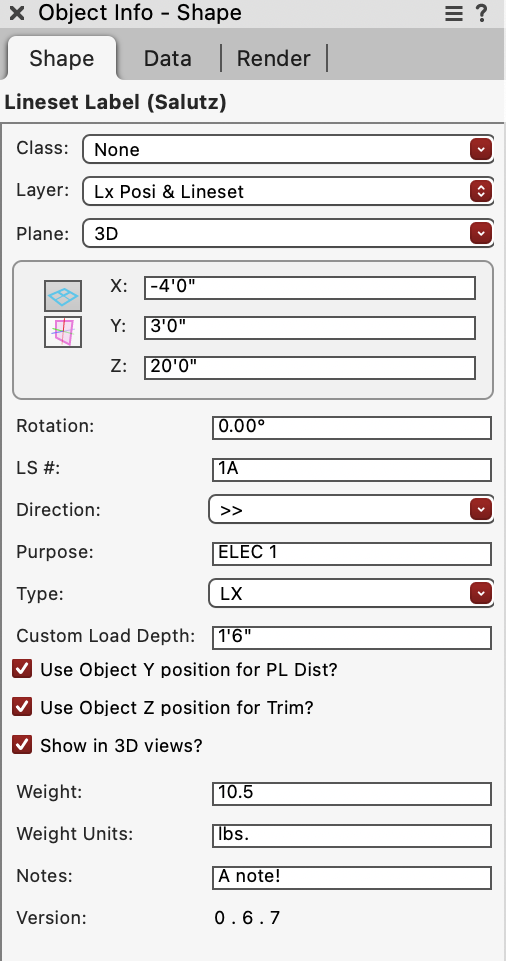
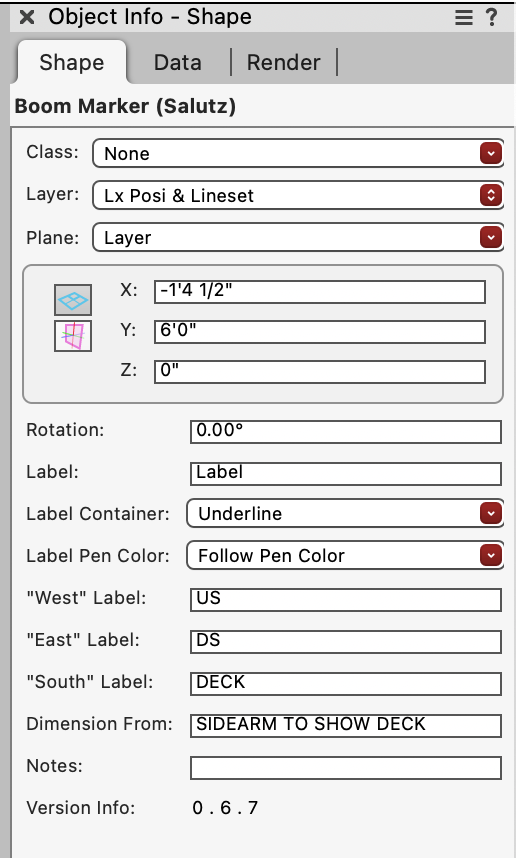
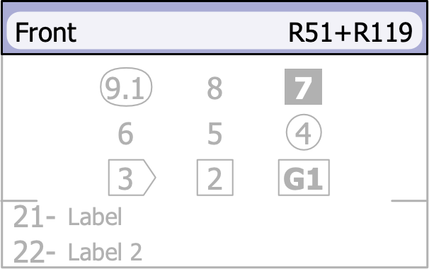
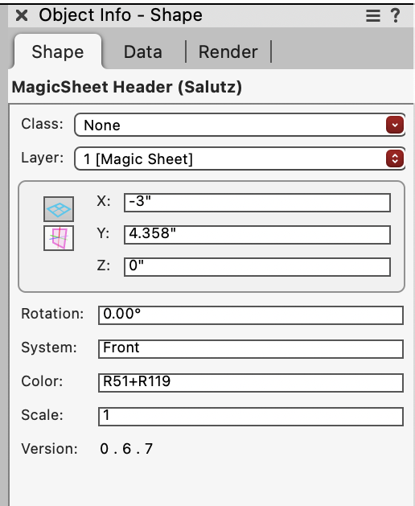
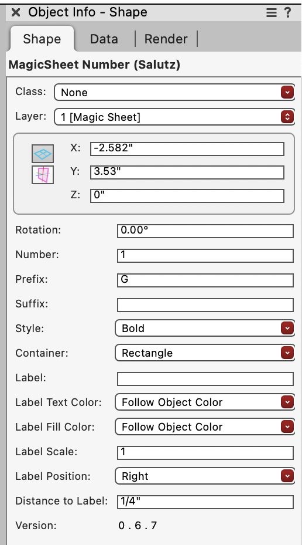
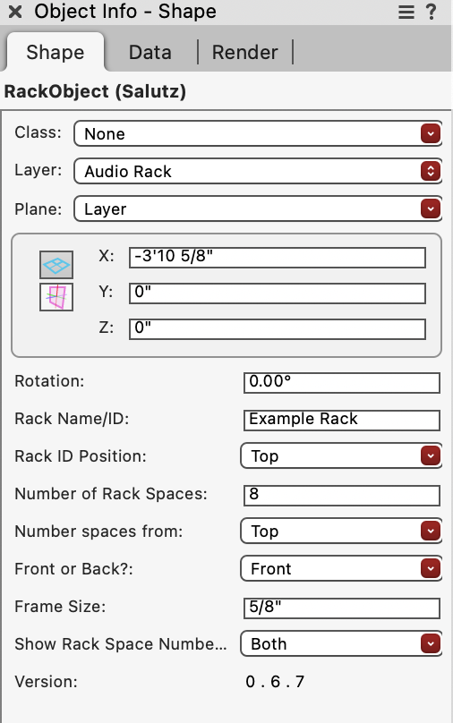
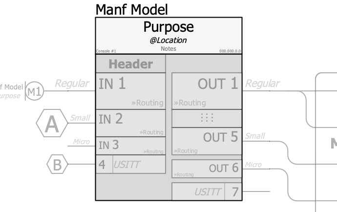
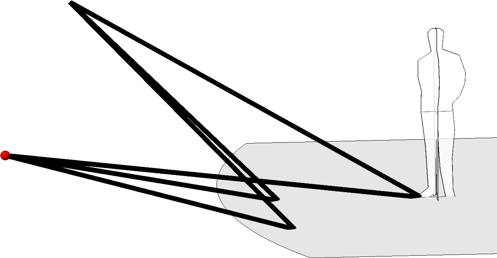

Salutz Tools Guide, v0.6.7
Table of Contents
- 1. Overview
- 2. Text+Box Object
- 3. DoubleBox Object
- 4. Lineset Label Object
- 5. Position Label Object
- 6. Boom Marker Object
- 7. Simple Softgoods Object
- 8. LED Tape Object
- 9. MagicSheet Header Object
- 10. MagicSheet Number Object
- 11. RackObject Object
- 12. RackEquip Object
- 13. SBD Family
- 14. SBD Device Object
- 15. SBD In-Out Object
- 16. SBD Amp Object
- 17. SBD Speaker-Mic Object
- 18. SBD Flyoff
- 19. SBD Line Object
- 20. SBD Path Object
- 21. Survey 3D Object
- 22. Menu Commands
1. Overview
Salutz Tools are a series of un-encrypted, free and open source Vectorscript Plug-In Objects for use in Vectorworks software, primarily for use by theatrical designers and technicians.
All objects have normal Vectorworks parameters for X & Y coordinates and rotation. Objects must be on the Layer Plane (not Screen Plane) to use the Z coordinate.
See README file for installation and license information.
2. Text+Box Object
Description
Text+Box is a point-object that places a user defined text label and draws 1 or 2 rectangles around the text, automatically adjusting the rectangle size based on text size.


User Editable Attributes
Fill/Pen/Color
Fill and Pen may be set on a per-object basis via the VW Attribute Palette. Hatches, Gradients, etc. may be used, but can not have local settings per object.
Text
Font options can be changed by altering the text attributes of the object via the Text menu or the Format Text box. Change color by using the Text Color Paramenter and object Pen Color.
Parameters
Label
Underline
Offset to outer edge
Gap from the inner rectangle to the outer rectangle.
Pad to Text
Gap from the text to the inner rectangle.
Use Rounded Rectangles?
Draws both rectangles as rounded rectangles.
Inner Rectangle?
Toggles visibility of the inner rectangle. If visible, the inner rectangle will always have a white fill and a line style set by the Inner Rectangle Line Style parameter.
Inner Rectangle Line Style
Choices: Solid, Dashed, Dashed Spaced, Dotted, None.
Inner Rectangle Duplicates
Draws between 1 and 4 duplicate rectangles within the gap between Inner and Offset rectangles.
Text Color
Choose whether text should be Black, White, or Follow Object Pen Color.
Alignment
Choose whether the object's insertion point is at its Center or at the tip of the Arrow.
Arrow Placement
Options: No Arrow, Left, Right, Top, Bottom
Arrow Scale (Separate Length & Width)
Scaled as 1 = 100% scale, 2 = 200% scale, etc.
3. DoubleBox Object
Description
DoubleBox is a rectangle-object that draws two inset rectangles and can place Label and Notes text in the object.
Note: Inner rectangle will always have a solid, white fill and a thin line with linetype set by the Inner Rectangle Line Style unless Inner Rectangle Line Style is set to Cut-Out.


User Editable Attributes
Fill/Pen/Color
Fill and Pen may be set on a per-object basis via the VW Attribute Palette. Hatches, Gradients, etc. may be used, but can not have local settings per object.
Text
Font options can be changed by altering the text attributes of the object via the Text menu or the Format Text box. Change color by using the Text Color Paramenter and object Pen Color. Notes text size is set by Notes Text Size Parameter.
Handles
The object has the standard 8 Vectorworks handles for re-shaping with the mouse.
Parameters
Height
Width
Offset Direction
Use Rounded Rectangle?
Draws both rectangles as rounded rectangles.
Offset to outer edge
Gap from the inner rectangle to the outer rectangle.
Pad to Contents
Gap from the contents to the inner rectangle.
Text Color
Choose whether text should be Black, White, or Follow Object Pen Color.
Inner Rectangle Line Style
Choices: Solid, Dashed, Dashed Spaced, Dotted, None, Cut-Out.
Inner Rectangle Duplicates
Draws between 1 and 4 duplicate rectangles within the gap between Inner and Offset rectangles.
Show Label Text
Label Text
Label Container
Choices: None, Underline, Box.
Label Position
Places Label Text at one of the following positions. Alignment is always set to centered.
InsideOutsidePad: In the middle of the gap betweenInnerrectangle and contents.Offset: In the middle of the gap betweenOffsetandInnerrectangles.
Show Notes Text
Note Text Size
Note Horiz. Align
Choices: Left, Center, Right, Justify.
Resize Box to Note?
Click here to edit notes
This brings up a dialog box to edit the notes text.
- Alignment is set to left-aligned in the dialog box, but will align on drawing based on
Note Horiz. Alignparameter. - Newline/paragraph breaks are allowed.
- Tabs may be entered on a Mac with key sequence <Alt>-<Shift>-<Tab>.
- Currently limited to 2,047 characters.
Notes Tab Size (Page)
This sets the width of tab characters in the Notes text. The object is set to default to 1/2" because that is the spacing the VW dialog box shows as a default.
Tab characters may be entered on a Mac with key sequence <Alt>-<Shift>-<Tab>.
Bullet Lists may be entered on a Mac with <Alt>-<Tab>.
NOTE: This functionality is not tested on Windows.
4. Lineset Label Object
Description
Lineset Label is a point-object that inserts a bi-directional label for creating lineset schedules on a drawing.


User Editable Attributes
Fill
Sets the color of the Type flag. This can be useful for using class coloring for different types of positions/departments.
Pen
Sets the color of the Purpose. This can be useful for using class coloring for different types of positions/departments.
Lineweight can be set by the user.
Text
Font typeface can be changed by altering the text attributes of the object via the Text menu or the Format Text box. All other font attributes (aside from color) are dictated by the object.
Parameters
LS #
A text string for the lineset number. It is set as a string to allow for letter modifiers (eg. "Lineset 25a").
The Spotlight Numbering Command can be used to automatically number this field.
Direction
Sets whether label points left or right.
Purpose
The Name or Label or contents of the Lineset.
Type
Dropdown list of common departments that might put equipment on linesets. This information does not display on the drawing; it is mainly used for displaying in worksheet summaries.
If the field is set to LX, the Purpose field will be bolded.
Custom Load Depth
If this field in non-zero, it will draw a box extension past the point of the label. This can serve as a visual guide if a particular hanging piece would block nearby battens or cause interference.
Use Object Y position for Plasterline Distance?
Distance from PL
This field is only used if Use Object Y position for Plasterline Distance? is deselected.
Use Object Z position for Trim?
If Object Z is 0", value does not display on drawing.
Trim
This field is only used if Use Object Z position for Trim? is deselected. If Trim is 0", value does not display on drawing.
Show in 3D views?
Weight
Set the weight load of the lineset as a number. This value will only appear on the drawing if it is non-zero.
Weight Units
Units used for the weight load (ie. lbs, kg, bricks).
Notes
Any additional notes for the lineset. This information does not display on the drawing; it is mainly used for displaying in worksheet summaries.
5. Position Label Object
Description
Position Label is a point-object that inserts a multi-directional label for labeling hanging positions/truss/etc for lighting and audio applications.


User Editable Attributes
Fill/Pen
Sets the color of the decorative arrow shape and the color/linetype of the Leader Line.
Text
Font typeface can be changed by altering the text attributes of the object via the Text menu or the Format Text box. All other font attributes are dictated by the object.
Parameters
Label Style
Choices: Regular, Bubble, Small, or Micro
Sets the size and style of the label.
Position Name
Note: In Small and Micro styles, if Position Name is more than 2 characters it will overshoot the edges of the object, therefore the text will be scaled down to fit inside the circle. In Regular and Bubble styles the shape is responsive to Position Name length.
Name Color
Choose whether text should be Black, White, or Follow Object Pen Color. This will only be available as a choice when Label Style is not Regular.
NOTE: This can cause text to render invisible eg. white text on a white background.
Show Inner Bubble?
This will only be available as a choice when Label Style is not Regular.
Show z-Trim Height
Draws an extra line of text with "TRIM@ " and the z-coordinate height of the object.
Show in 3D views?
Text Line 1
A line of text for user notes.
Text Line 2
Another line of text for user notes.
Label Direction
Choose left-pointing, right-pointing, or centered-line.
Use Leader Line?
Engages a leader line from the object to a point set by the user with the mouse. Potentially useful if the label has to be a fair distance from the hanging position.
Scale
In addition to the size/styles in Label Style, the object can be individually scaled to user preference.
Drawing Usage
Choices: Plot, Section, or Other. Used for worksheets or Custom Selection to differentiate what the label is being used for.
Wrap Text?
Text Wrap Width
If Wrap Text? is engaged, sets the width of text wrap for all text lines.
6. Boom Marker Object
Description
Boom Marker is a point-object that inserts a compass style directional label for labeling vertical hanging positions.


User Editable Attributes
Fill/Pen
Sets the Pen color of the Label text, Label Container, and the directional arrows. Fill sets the fill of the Label Container. All other Fill/Pen attributes are dictated by the object.
Text
Font typeface can be changed by altering the text attributes of the object via the Text menu or the Format Text box. The object's font size affects the size of the Label text. All other font attributes are dictated by the object.
Parameters
Label
Label Container
Choices: None, Underline, Rectangle, or Bubble.
Label Pen Color
Choose whether text should be Black, White, or Follow Object Pen Color.
NOTE: This can cause text to render invisible eg. white text on a white background.
"West" Label
The text on the "West"/Left side of the label compass.
"East" Label
The text on the "East"/Right side of the label compass.
"South" Label
IF South Label is left blank the "South"/Downward arrow will not be drawn.
Dimension From
If not blank, adds "DIMENSION FROM: <user text>" text under compass.
Notes
If not blank, adds "NOTE: <user text>" text under compass.
7. Simple Softgoods Object
Description
Simple Softgoods is a point-object that inserts a simple 2D/3D hanging softgood or scenic object, generally for placing on battens. At the moment Simple Softgoods do not associate with Vectorworks rigging objects.


User Editable Attributes
Fill/Pen
User Fill/Pen affects the object. Label and Opening properties can be customized via Opening/Portal Line Style, Label Text Color, and Label Background Color parameters.
Text
Font typeface, size, and style can be changed by altering the text attributes of the object via the Text menu or the Format Text box.
Parameters
Label
Horizontal Length
Opening
Horizontal width of the opening.
Vertical Height
Overall height of the object.
Portal Header Height
This specifies the distance from the top of the object to the top of the portal opening.
Opening/Portal Line Style
Choices: Solid, Dashed, Dashed Spaced, Dotted, None.
Depth
Drawn depth of the object. To draw a simple line, set this to 0".
Material Type
This makes no visual difference in 2D.
- Soft: Draws the 3D with a taper to the top (triangle in section).
- Hard: Draws the 3D with a square top (rectangle in section).
Hang Position in Depth
Allows positioning the object offset from the hanging position based on a percentage of the object's depth. For example: a scenic piece with a Depth of 2ft is hung from a batten, but 6inches are downstage of the batten and 18inches are upstage of the batten. A value of 0.25 would accomplish this while allowing the plug-in object to maintain a Y position that matches the batten.
Must be a value between 0 and 1. 0.5 sets the hang to the center of the object.
Label Text Color
Choices: Black or Follow Object Color
Label Background Color
Choices: White, Follow Object Color, or None (ie. no fill).
Label Position
Choices: Center, Legs, or Both.
Notes
8. LED Tape Object
Description
LED Tape is a path-object that allows the user to draw and edit a poly-line with the normal Vectorworks methods, calculates length and wattage, and places Type/Channel/Address labels along the length of the polyline.


User Editable Attributes
Fill/Pen
Fill/Pen attributes only affect the polyline drawing. All other Fill/Pen attributes are dictated by the object.
Text
Font typeface and style can be changed by altering the text attributes of the object via the Text menu or the Format Text box. Text size is set by the Text Label Height parameter. All other font attributes are dictated by the object.
Parameters
Type of Tape (Label)
Channel
Address
These values will be combined into a single label with the format:
Type of Tape (Channel) [Address]
If any field is left blank, that field and its parentheses/brackets will be excluded from the drawn label. Labels are placed at the midpoint between two polyline vertices. For curves, Cubic Spline or Radius (Point on Arc) are recommended.
Type of Tape (Long)
This parameter is an additional field for a more detailed description of the type of tape. This information does not display on the drawing; it is mainly used for displaying in worksheet summaries.
Text Label Height
Set text height as a dimension, eg. 2".
Tape Width
Sets the width of the LED Tape polyline on the drawing. If set to 0", the drawing will default to 12mm.
Note: The Tape Width parameter is a dimension. This means that you can enter a value of inches or millimeters, regardless of your document units setting. Simply type 1.5in or 12mm into the field.
Watts per Length Unit
Length Unit
Note: The Length Unit parameter is a dimension. This means that you can enter a value of feet (1') or meters (1m), regardless of your document units setting.
Total Tape Length
This is calculated by the object and can not be edited.
Total Wattage
This is calculated by the object and can not be edited.
9. MagicSheet Header Object
Description
MagicSheet Header is a point-object for creating lighting magic sheets on a sheet layer or a 1:1 design layer. It is intended as a label for a system of channels on a magic sheet.


User Editable Attributes
Fill/Pen
Sets the color of the box around the text. Gradients and Tiles may be used (eg. for RGB or CMY systems), but local settings per object are unreliable.
Text
Font typeface can be changed by altering the text attributes of the object via the Text menu or the Format Text box. All other font attributes are dictated by the object.
Parameters
System
Label for the lighting system (eg. Front, Side, Practicals, etc).
Color
Label for the gel color or color-mixing method for that system of fixtures.
Note: this does not automatically change the color of the box around the text. That must be set by the Fill or Pen Attribute.
Scale
Note: A value of 1 equals 100% scale. By default the object is drawn to be 2 inches wide.
10. MagicSheet Number Object
Description
MagicSheet Number is a point-object for creating lighting magic sheets on a sheet layer or a 1:1 design layer. It is intended as a label for channels or groups.


User Editable Attributes
Fill/Pen
Fill may be set on a per-object basis via the VW Attribute Palette. Pen affects the text color. All other Pen attributes are set by the plug-in object.
If Style is Invert Bold, all colors will be set by the plug-in object.
Text
Font typeface and size can be changed by altering the text attributes of the object via the Text menu or the Format Text box. All other font attributes are dictated by the object.
Parameters
Number
The channel or group number. Does support decimal values for multi-cell fixtures. The Spotlight Numbering Command can be used to automatically number this field.
Prefix
A value before the channel number to allow labeling (eg. Groups) without interfering with automatic-numbering.
Suffix
A value after the channel number to allow labeling without interfering with automatic-numbering.
Style
Choices: Plain, Bold, Invert Bold
Container
Draws a container around the number value. The container re-sizes as the value gets longer/shorter.
Choices: None, Rectangle, Circle, Oval, North, South, East, West.
Label
Places accompanying label text on the drawing for a list style magic sheet.
Label Text Color
Choices: Black or Follow Object Color.
Label Fill Color
Choices: White or Follow Object Color.
Label Scale
Adjusts Label text as a percentage of the Number text size.
Label Position
Choices: Right or Left.
Distance to Label
Gap distance from Number to Label.
11. RackObject Object
Description
RackObject is a point-object for drawing 19" A/V racks for mounting gear. Built to interface with RackEquip plug-in objects. RackObject will re-draw/re-size based on the Number of Rack Spaces parameter.


User Editable Attributes
Fill/Pen
Sets the attributes of the frame around the Rack Object. Pen also sets the color of the Rack Name/ID text.
Text
Font attributes of the Rack Name can be changed by altering the text attributes of the object via the Text menu or the Format Text box. The space numbers are affected by the changes in typeface, but no other attributes including size because they are scaled to fit in 1 rack space to avoid overlap.
Parameters
Note: Rack uses the bottom of the bottom-most rack space as its origin point and draws upward. If you change the frame size or number of rack spaces, you will likely have to check its alignment with other racks.
Rack Name/ID
Rack ID Position
Choices: None, Top, or Bottom
Number of Rack Spaces
Number Spaces From
Choices: Bottom or Top
Front or Back?
Added to the Rack label on drawing.
Choices: blank, Front, Rear
Frame Size
Specifies the outside offset drawn from the rack spaces in inches, not the overall width or height.
Show Rack Space Numbers
Choices: None, Left, Right, Both
12. RackEquip Object
Description
RackEquip is a point-object for drawing rack-mounted gear. Built to interface with RackObject plug-in objects. RackEquip will pick up its Rack ID and Position in Rack parameters from the RackObject it is placed over. However, it will not automatically move or rotate with its parent RackObject, they must be selected and moved together.


User Editable Attributes
Fill
Sets the fill of Rack Ears or whole unit based on Object color affects attribute.
Pen
Sets the color of the text labels.
Text
- Font typeface can be changed by altering the text attributes of the object via the Text menu or the Format Text box.
- Style changes (Bold, Italic, etc)
affect the
Manufacturer&Modelbut not thePurpose. - Size will attempt to follow the user text size settings, but the plug-in will scale the text to fit inside the equipment.
Parameters
Purpose Label
Manufacturer
Model
Number of Rack Spaces
Note: Uses the top of the equipment piece as its origin point.
Width
Choices: Full, Half, Quarter, Fifth.
Half width will render a -L or -R at the end of Position in Rack depending on whether it is on the left or right side of the rack.
Quarter or Fifth will add a decimal point number to the end of Position in Rack based on left/right position.
Object color affects
Choices: Rack Ears Only or Entire Object
Rack ID
(CAN NOT BE EDITED)
Automatically finds the Rack Object it is placed in and displays its ID. Objects must be on the same layer and may not be in a Symbol.
Can be useful for Custom Selection and Worksheet displays.
Position in Rack
(CAN NOT BE EDITED)
Automatically finds its position in the Rack Object and displays the space number. Objects must be on the same layer and may not be in a Symbol.
Can be useful for Custom Selection and Worksheet displays.
13. SBD Family
SBD Objects are for use in preparing a System Block Diagram for audio, video, or networking systems. They are intended for use in design layers, with the intention of using viewports and sheet layers for printing/exporting.

Size
14. SBD Device Object
Description
SBD Device is a point-object for drawing a general piece of equipment in an SBD drawing.


User Editable Attributes
Fill/Pen
All attributes are set by the object.
Text
Font typeface can be changed by altering the text attributes of the object via the Text menu or the Format Text box.
Parameters
Type
Choices: Console, Rack, Multi, FX Process, Mixer, DAC, Computer, Com, Amp, Other
Header Size
Sets the height of the object box and dictates which parameter fields are placed on the drawing.
Column Width
Choices:
Double:Standard two columns for inputs and outputs.Single:One column, ideal for a Pass Thru configuration.Break:Draws a break line at the selected position to indicate multiple instances of this piece of equipment.BottomLeftRight
Manufacturer
Model
ID#
Prefix
Precedes the ID#.
Location
Purpose
IP Address
Size of Spaces
Affects the size of spaces drawn under the Device header. These spaces are for placement of SBD In-Out Objects.
Number of Spaces
Notes
Show Notes on Drawing?
15. SBD In-Out Object
Description
SBD In-Out is a point-object for drawing the inputs or outputs of a piece of equipment in an SBD drawing.


User Editable Attributes
Fill/Pen
All attributes are set by the object.
Text
Font typeface can be changed by altering the text attributes of the object via the Text menu or the Format Text box.
Parameters
Type
Choices: Input, Output, Header, Spacer, Thru
Size
ID#
Prefix
Precedes the ID#.
Routing
Routing Label Class
Purpose
Purpose Label Class
Parent Device
NOTE: This field is filled by the object based on the SBD Device boundary that the SBD In-Out object is placed within.
Connector
Note: This field does not appear on the drawing. It is mainly used for worksheets or Custom Selection.
Notes
16. SBD Amp Object
Description
SBD Amp is a point-object for drawing an amplifier in an SBD drawing.


User Editable Attributes
Fill/Pen
Fill/Pen affects the Model label text. All other attributes are set by the object.
Text
Font typeface can be changed by altering the text attributes of the object via the Text menu or the Format Text box.
Parameters
Type
Automatically set to 'Amp'.
Number of Channels
SBD Amp will re-draw with the specified number of channels at Size: Regular.
Manufacturer
Model
ID#
Prefix
Precedes the ID#.
Location
Purpose
IP Address
Notes
Show Notes on Drawing?
17. SBD Speaker-Mic Object
Description
SBD Speaker-Mic is a point-object for drawing a speaker, microphone, or signal source in an SBD drawing.


User Editable Attributes
Fill/Pen
All attributes are set by the object.
Text
Font typeface can be changed by altering the text attributes of the object via the Text menu or the Format Text box.
Parameters
Type
Choices: Speaker, Microphone, Source.
ID#
Prefix
Precedes the ID#.
Manufacturer
Model
Active or Passive
Purpose
Purpose Label Class
Notes
Not shown on drawing.
18. SBD Flyoff
Description
SBD Flyoff is a point-object for drawing a flyoff indicator in an SBD drawing.


User Editable Attributes
Fill/Pen
All attributes are set by the object.
Text
Font typeface can be changed by altering the text attributes of the object via the Text menu or the Format Text box.
Parameters
Type
Currently Flyoff is the only choice. This is being held for possible future expansion.
Size
Choices: Regular, Small, or Micro
Note: currently Regular and Small draw the same shape on the drawing. This may have more options in a future expansion.
ID#
Prefix
Precedes the ID#.
Purpose
Notes
19. SBD Line Object
Description
SBD Line is a point-object which draws a multi-segment polyline between two points. It has 3 ControlPoint handles to set the begin-point, the end-point, and the position at which with line curves in the middle. The beginning point is also the origin point of the object.


User Editable Attributes
Pen
Sets all relevant pen attributes of the drawn line except for beginning & end markers.
Parameters
Corner Style
Note: all styles adjust their sizing to fit in the geometry of their path.
Initial Rounded Radius
Start to Midpoint Distance
Corresponds to the middle ControlPoint handle. Useful as a measurement or to type in a value when using the handle would not be most effective (eg. adjusting multiple selected lines at once).
Start to Endpoint Distance
Corresponds to the end ControlPoint handle. Useful as a measurement or to type in a value when using the handle would not be most effective (eg. adjusting multiple selected lines at once).
Beginning Marker
Sets the style of the Beginning Marker.
Choices: None, Dot, Arrow, Box
# of Beginning Duplicates
Creates multiple inputs at the beginning of the line for instances where multiple sources are combining. Use positive numbers to place duplicates above the line start point and use negative numbers to place duplicates under.
Beginning Duplicates Size
Choices: Regular, Small, Micro.
Ending Marker
Sets the style of the Ending Marker.
Choices: None, Dot, Arrow, Box
# of End Duplicates
Creates multiple inputs at the end of the line for instances where multiple sources are splitting. Use positive numbers to place duplicates above the line end point and use negative numbers to place duplicates under.
End Duplicates Size
Choices: Regular, Small, Micro.
20. SBD Path Object
Description
SBD Path is a path-object that allows the user to draw and edit a poly-line with the normal Vectorworks methods. The plug-in object just takes care of the beginning and end markers and stylizing the corners based on the Corner Style parameter.
SBD Path largely exists for situations where a SBD Line object is insufficient for a task, and more complicated geometry or control is needed.


User Editable Attributes
Pen
Sets all relevant pen attributes of the drawn line except for beginning & end markers.
Parameters
Corner Style
Note: all styles adjust their sizing to fit in the geometry of their path.
Initial Rounded Radius
Beginning Marker
Sets the style of the Beginning Marker.
Choices: None, Dot, Arrow, Box
Ending Marker
Sets the style of the Ending Marker.
Choices: None, Dot, Arrow, Box
21. Survey 3D Object
Description
Survey 3D is a point-object that allows the user to calculate one or two points in 3D space based on measurements (likely taken with a laser distance meter) in order to locate hanging positions or architectural features in 3D space while only having access to a limited amount of a stage deck.
- Measurement point placements can be set to negative values to flip the side of the origin point on which they are placed.
- Make sure
Vectorworks Preferences>Display>Display 3D Lociis set correctly to allow the result points to display properly in 3D. - Result points will not be drawn until all related measurements and distances have non-zero values.
- It is not recommended to rotate the object. While the point may still be drawn correctly in space, the measurements and coordinates will not be accurate.
Measure 1is set at the origin of the object.Measure 2is set on the Y-axis on the opposite side ofMeasure 1from the result points.Measure 3is set on the X-axis ifMeasurement Styleis set toOff Axis.

User Editable Attributes
Fill/Pen/Color
Fill and Pen may be set on a per-object basis via the VW Attribute Palette. Hatches, Gradients, etc. may be used, but can not have local settings per object. 3D Guide Lines receive their color from the Fill attribute, while 3D Loci receive color from the Pen attribute.
Text
Font options can be changed by altering the text attributes of the object via the Text menu or the Format Text box. Alignment is set to Center by the object.

Parameters

Label
This will be drawn over the result points to differentiate between multiple Survey 3D objects.
Measurement Style
- On Axis
This style only uses
Measure 1&2to locate result points that are directly in-line and on-axis in the Y plane with those two points. - Off Axis
This style uses all three
Measurepoints, and can locate result points that are anywhere in 3D space with a Z-height greater than theMeasurepoints.
Number of Result Points
Choices: 1 or 2. The 2 points can be useful when trying to describe multiple points on an object without having to re-measure. Examples would be the two ends of a hanging pipe or the two extreme sightlines of a balcony seating area.
Draw 3D Guide Lines?
Draw Coordinates?
Dist Measure 1 to Point 1
Dist Measure 1 to Point 2
Measure 2 Y Dist
Placement of Measure 2 from Measure 1
Dist Measure 2 to Point 1
Dist Measure 2 to Point 2
Measure 3 X Dist
Placement of Measure 3 from Measure 1
Dist Measure 3 to Point 1
Dist Measure 3 to Point 2
Result Points 1 & 2
Note: These values are set by the object.
Displays the coordinates of the resulting points.
- If not all necessary fields have a non-zero value, this will display
Incomplete Dimensions. - If distance measurements have incompatible values, this will display
ERROR! Invalid Dimensions. The same message will be placed on the drawing in red, and red spheres will be drawn in 3D to indicate that new measurements need to be taken.
22. Menu Commands
These are included to help with workflow when using the Salutz Tools Plug-in Objects and integrating with Worksheet reports.
Refresh Selected
Refreshes the selected objects on the active layer with the ResetObject command. Particularly useful for getting out-of-date plug-in objects to update.
Refresh Worksheets
Refreshes and recalculates the selected worksheets on the active layer. While there is a right-click menu item for "Recalculate" and menu items for "Recalculate Active" or "All Worksheets" in the worksheet editor, this exists to quickly recalculate multiple worksheets with a simple select and menu command from the main drawing.
This also allows for custom keyboard shortcuts.
Refresh Section VP
Refreshes all Section and Elevation Viewports in the entire drawing.
Use with caution Depending on rendering options for the various viewports, this process could take a very long time. Generally most useful when dealing with a drawing with multiple Section/Elevation Design Layer Viewports (particularly referencing other files), this menu command can be a time-saver if run right after opening the file.
UnFlip Selected
Checks selected text, symbol, and plug-in objects on the active layer to see if their Flip state is true, and if so removes the Flip. This is particularly useful if you have Mirrored a collection of plug-in objects and want them to maintain their original orientation.
Hydra
Initiates a hotkey process for switching/setting classes, layers and saved views. Once placed in the workspace this command can have a keyboard shortcut defined to make the process simpler.
Syntax / Tags
In order to be recalled by Hydra, Layers and Classes must have a Tag assigned to them with the syntax "Hydra-" followed by the single keyboard key the user wishes to use to recall that Layer or Class.
Saved Views must have "Hydra-<key>" somewhere in their name.
NOTE: Only one resource may be assigned to a particular key. Having multiple resources tagged with the same key can lead to unexpected results.
Step 1: Calling the Hydra Command
The Hydra command must be added to a menu in the workspace in order to be used. It can also have a keyboard shortcut assigned. On a Mac I've found that Command-semicolon is unused by Vectorworks and is fairly ergonomic.
The <Escape> key may be pressed at any time to cancel the command.
Step 2: Select Command type
Type a single key to select the action to perform. This is case-insensitive.
Step 3: Choose resource
Type a single key to select the resource (Layer, Class, Saved View) assigned to that key. If no resource is assigned, Hydra will deliver an error message.